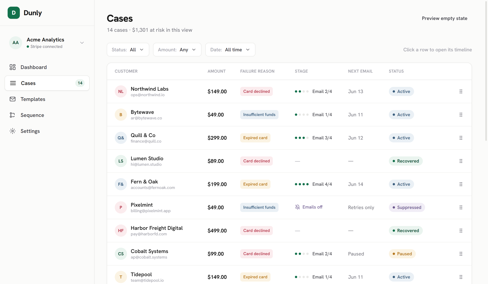
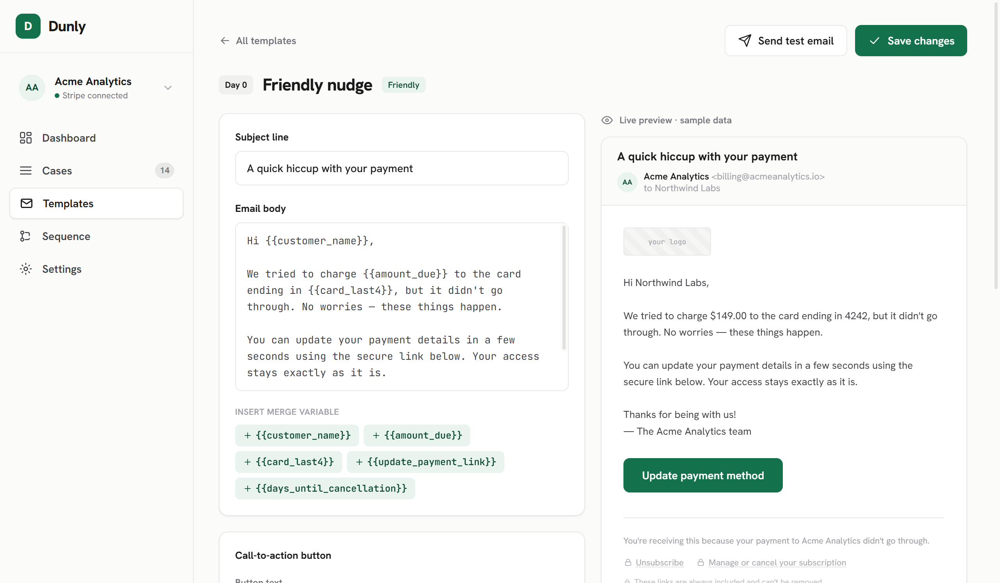
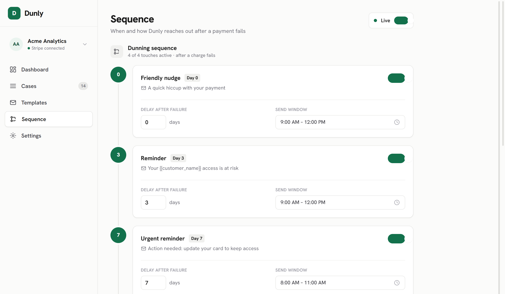

Dunly
Dunly catches every failed Stripe payment, opens a recovery case, and runs a timed email sequence with one-tap card-fix links, and it heads off expiring cards before they ever fail.

sample dataThe problem
Subscription businesses lose real money to payments that fail for dumb reasons: an expired card, a hit credit limit, a routine bank decline. The customer never chose to leave; the charge just didn’t clear. This is involuntary churn, and for most subscription companies it’s 20–40% of all churn. Stripe’s automatic retries claw some of it back, but they’re silent: the customer never gets a clear, well-timed nudge to go fix their card. Stripe’s built-in reminder emails are generic, unbranded, and not sequenced, so most small teams ship a single “payment failed” email and move on, because building real dunning in-house means webhook infrastructure, retry logic, deliverability work, and idempotency handling, none of which is their actual product.
The people this hurts most are exactly the ones least able to build it: indie and micro-SaaS founders on $1k–$50k MRR with a one-to-five-person team, and membership and creator businesses with high card-failure rates and non-technical owners. For them every recovered dollar matters and there’s no spare engineer to chase it. Involuntary churn is the most recoverable revenue a SaaS has (the customer still wants the product), and it’s the revenue most often left on the floor. Dunly turns every failed Stripe charge into a managed recovery case and walks the customer back to paid, and it catches expiring cards before they fail at all.
“Most subscription churn isn’t a decision — it’s a declined card nobody followed up on.”
Decide whether to send at send time, not schedule time
The naive design schedules every email when a case opens and trusts that schedule. I didn’t trust it. The moment a case opens, the system schedules every touch ahead, but the worker that actually sends re-checks reality first: is the invoice still unpaid, is the Stripe connection still live, did the customer unsubscribe, has this stage already gone out? If the problem is already solved, the email is cancelled instead of sent. I chose this “schedule-ahead, guard-at-send” split because over-scheduling is cheap and safe, while sending one wrong email (to someone who already paid or already left) is the failure that loses trust. Correctness lives at the last possible moment.
Make duplicate events impossible to act on twice
Webhooks get redelivered; queues retry; networks hiccup. A dunning tool that double-charges a customer’s inbox is worse than one that does nothing. So idempotency isn’t a single check: it’s layered, from the database up through the queue, the handler state guards, and the email provider’s own dedupe key. Any one layer can fail and the customer still gets exactly one email per stage. The trade-off is more moving parts to reason about; the payoff is that “exactly once” holds even when the world misbehaves.
Prevent the failure instead of only reacting to it
Reacting to failed payments is table stakes. The more valuable half is pre-dunning: a scanner watches connected accounts for cards about to expire and runs a short prevention sequence before any charge fails. A failure you prevented costs nothing to recover, and prevention emails convert better than recovery emails. It’s also why I kept the whole product deterministic (rules, not a model, in the money path) so a merchant can audit exactly why any email did or didn’t send.
- Connect Stripe in one OAuth click (no API keys to copy) and recovery runs automatically from there.
- A 4-touch recovery sequence plus a 2-touch pre-dunning sequence, branded per workspace, with one-tap links straight to fixing a card.
- A six-state case tracker with automatic stop conditions (paid, canceled, disputed, unsubscribed, bounced) so it never chases a problem that’s already solved.
- A recovery dashboard that proves ROI: recovered value, recovery rate, and an honest voluntary-vs-involuntary churn split.
Dunly is one backend service organized in clear layers. An ingestion layer takes signature-verified webhooks from Stripe and acknowledges them fast: it stores the event and hands off, doing no real work in the request. A queue of background workers does the actual recovery: opening cases, scheduling the sequence, and sending. At the center is a case state machine, the single source of truth for where every failed invoice stands. A delivery layer renders branded emails and signs the one-tap portal and unsubscribe links.
The choice that keeps it simple: one Postgres database does double duty: it holds the data model and the job queue. No separate message broker, no Redis. Combined with the guard-at-send discipline, the whole thing runs as a single process against a single database and scales by adding workers, not services. (Held deliberately light here: this is unreleased work.)


Dunly is built and verified end-to-end, but not yet live. Each phase passed against Stripe test mode and synthetic-event scripts, and the full loop (failure to case to sequence to portal to resolution) runs start to finish. What it doesn’t have yet is production traffic, so the number that matters most, actual recovered revenue, stays open until launch. The build proves the hard part is done: reliable, idempotent, prevention-first dunning a Stripe business can connect in one click.